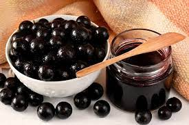
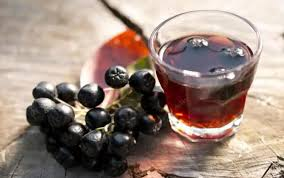
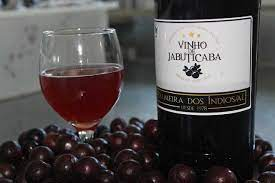

Cultura
A jabuticaba é apreciada tanto fresca quanto em diversas preparações culinárias. Ela pode ser consumida diretamente do pé, o que é uma experiência única, pois a fruta tem uma casca fina e suculenta com uma polpa doce e suculenta. Além disso, a jabuticaba é usada para fazer sucos, geleias, licores e até mesmo vinhos. Seu sabor adocicado e levemente ácido é bastante apreciado pelos brasileiros.
- 
- 
- 
Além de sua importância na culinária, a jabuticaba também é valorizada por seu potencial medicinal. Ela é rica em antioxidantes, vitaminas e minerais, o que a torna uma opção saudável para incluir na dieta. Acredita-se que a jabuticaba possua propriedades anti-inflamatórias, auxilie na saúde cardiovascular e até mesmo na prevenção de certos tipos de câncer.
A fruta também é tema de várias festas e festivais tradicionais em diferentes partes do Brasil. Nessas ocasiões, as pessoas se reúnem para celebrar a cultura local, aproveitar as frutas frescas, experimentar pratos típicos e participar de atividades relacionadas à jabuticaba, como concursos de colheita, exposições e competições culinárias.
Em resumo, a cultura da jabuticaba no Brasil engloba o cultivo, colheita, consumo e celebração dessa fruta única. Ela desempenha um papel importante na vida cotidiana das pessoas, fortalece os laços comunitários e é valorizada tanto por suas qualidades culinárias quanto por seus possíveis benefícios à saúde.